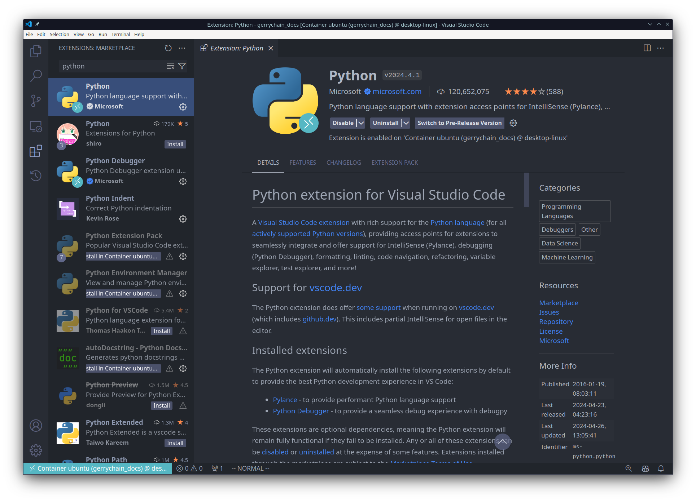
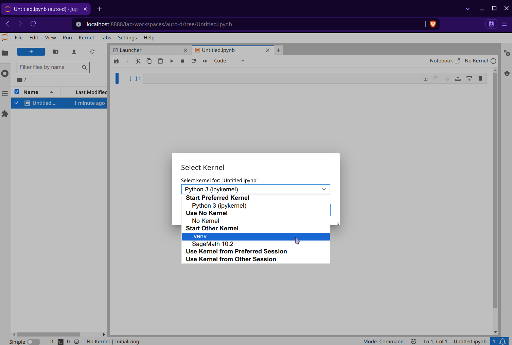
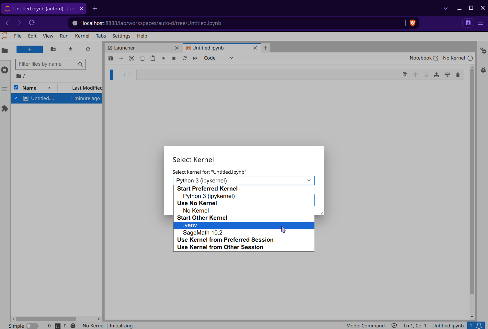

Making an Environment Reproducible¶
If you are working on a project wherein you would like to ensure particular runs are reproducible, it is necessary to invoke
MacOS/Linux:
export PYTHONHASHSEED=0Windows:
PowerShell
$env:PYTHONHASHSEED=0Command Prompt
set PYTHONHASHSEED=0
before running your code. This will ensure that the hash seed is deterministic which is important for the replication of spanning trees across your runs. If you would prefer to not have to do this every time, then you need to modify the activation script for the virtual environment. Again, this is different depending on your operating system:
MacOS/Linux: Open the file
.venv/bin/activatelocated in your working directory using your favorite text editor and add the lineexport PYTHONHASHSEED=0after theexport PATHcommand. So you should see something like:_OLD_VIRTUAL_PATH="$PATH" PATH="$VIRTUAL_ENV/Scripts:$PATH" export PATH export PYTHONHASHSEED=0
Then, verify that the hash seed is set to 0 in your Python environment by running
pythonfrom the command line and typingimport os; print(os.environ['PYTHONHASHSEED']).Windows: To be safe, you will need to modify 3 files within your virtual environment:
.venv\Scripts\activate: Add the lineexport PYTHONHASHSEED=0after theexport PATHcommand. So you should see something like:_OLD_VIRTUAL_PATH="$PATH" PATH="$VIRTUAL_ENV/Scripts:$PATH" export PATH export PYTHONHASHSEED=0
.venv\Scripts\activate.bat: Add the lineset PYTHONHASHSEED=0to the end of the file. So you should see something like:if defined _OLD_VIRTUAL_PATH set PATH=%_OLD_VIRTUAL_PATH% if not defined _OLD_VIRTUAL_PATH set _OLD_VIRTUAL_PATH=%PATH% set PATH=%VIRTUAL_ENV%\Scripts;%PATH% rem set VIRTUAL_ENV_PROMPT=(.venv) set PYTHONHASHSEED=0
.venv\Scripts\Activate.ps1: Add the line$env:PYTHONHASHSEED=0to the end of the before the signature block. So you should see something like:# Add the venv to the PATH Copy-Item -Path Env:PATH -Destination Env:_OLD_VIRTUAL_PATH $Env:PATH = "$VenvExecDir$([System.IO.Path]::PathSeparator)$Env:PATH" $env:PYTHONHASHSEED=0 # SIG # Begin signature block
After you have made these changes, verify that the hash seed is set to 0 in your
Python environment by running python from the command line and typing
import os; print(os.environ['PYTHONHASHSEED']) in the Python prompt.
Reproducible Environments in VSCode and Jupyter Lab¶
In general, it is easier to use jupyter notebooks with bespoke virtual environments through a text editor like VSCode, but we will also show how to do this using the standard Jupyter Lab interface as well.
Regardless of which method you prefer, you will need to make sure that you have
installed the ipykernel package into the virtual environment that you will be
working with:
pip install ipykernel
VSCode¶
First you will want to make sure that you have installed VSCode. Then, you can click on “File” in the upper-left and select “Open Folder” to open the folder with your project and virtual environment in it. This should look something like this:

Notice that I have the folder .venv in my file explorer. This is just my virtual
environment that I created for this project.
To install the Python extension, open the extensions view by clicking on the square icon on the left side of the window. Then, search for “Python” and install the extension that is published by Microsoft. This will allow you to use the Python interpreter in your virtual environment and will give you some helpful things like code completion and debugging in the event that you would like it.
Likewise, we will want to install the “Jupyter” extension:

Now let’s make a new jupyter notebook. You can do this by right-clicking in the file explorer (or by using the File menu) and selecting “New File”.

Then, you will want to save the file with the extension .ipynb since we are making
a jupyter notebook. We can now open the file and select the Python interpreter
that we would like to use:


And now we are done! We can now use all of the packages in our .venv virtual environment
inside of our jupyter notebook:

Of course, if you would like to, you may also use a different name for your virtual environment, or you can even use the same process to allow for multiple virtual environments in the same project!
Jupyter Lab / Notebook¶
In order to use Jupyter Lab or Jupyter Notebook, we will need to make sure that it is installed for our virtual environment. This can be done by running the following command:
pip install jupyter
Then, we will want to install the kernel for our virtual environment. This can be done by running the following command:
python -m ipykernel install --user --name=.venv
Now, we can open Jupyter Lab by running the following command:
jupyter lab
You will now see that the .venv is available in your list of kernels:

Warning
As opposed to VSCode, Jupyter Lab does not automatically use the virtual environment that you have in your project, so you will need to make sure that you have the correct kernel installed before opening the lab. You can see which kernel you are using by looking at the output of the following command:
jupyter kernelspec list
this will output something like
Available kernels:
.venv /Users/username/.local/share/jupyter/kernels/.venv
python3 /usr/local/share/jupyter/kernels/python3
You will then need to inspect the output of this command to see where the kernel is located.
In the above example, we can see that the kernel .venv is located at
/Users/username/.local/share/jupyter/kernels/.venv which is the correct location for the
current working project. However, if we were to make a new project in
/Users/username/Desktop/another_project and make a new virtual environment in this
location with the same name of .venv, then, after running the command
python -m ipykernel install --user --name=.venv,
the kernel will still look like it is located at
/Users/username/.local/share/jupyter/kernels/.venv, BUT this new kernel is actually
the one for for the second project and not the original! This is important to note because
if you are working on multiple projects and you have the same kernel name for each project,
things can get a little confusing, so it is best to always reinstall the appropriate kernel
before opening the project in Jupyter.
Of course, an easy fix for this is to just use a different name for the kernel in each project.
For example, I might make my kernel name for the project in
/Users/username/Desktop/gerrychain_docs
venv_gerrychain_docs via the command
python -m ipykernel install --user --name=venv_gerrychain_docs
and the kernel name for the project in
/Users/username/Desktop/another_project venv_another_project.
We can now make a new notebook and select the kernel that we would like to use:
 

Lastly, we can import GerryChain and use it in our notebook: